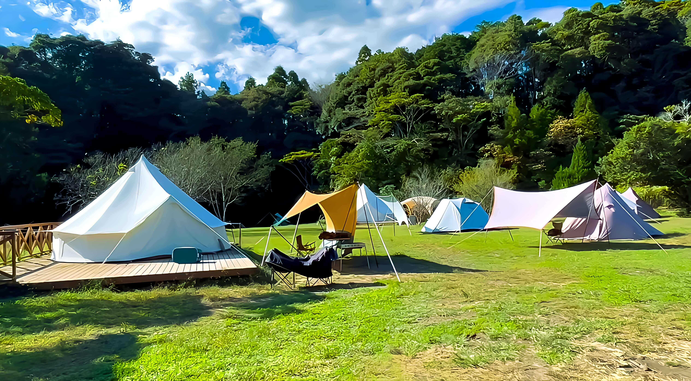
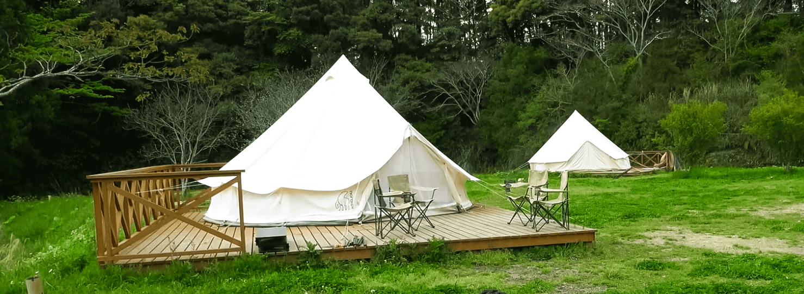

TAKIVILLAGE
星空の輝きと焚火の温かさ
Feature
TAKIVILLAGE
〒298-0112 千葉県いすみ市国府台４５９−２
HIGHLIGHTS
自然の美を楽しむ
Takivillageの絶景
Takivillageは、自然の息吹が感じられる理想的な場所です。
静かな森と澄んだ川が広がるこの場所では、日々の喧騒を忘れ、豊かな自然の中でリフレッシュできます。
特に夕暮れ時の景色は格別で、暖かい光が広がる夕暮れ。
そして空に広がる満天の星空の輝きを楽しむことができます。
Takivillageで、自然の美しさに触れながら、心豊かな時間をお過ごしください。

グランピングで贅沢な自然体験
Takivillageのグランピングは、自然の美しさと快適さを同時に楽しめる特別な体験です。
ラグジュアリーなテントやコテージで、静かな森や澄んだ川のそばでの滞在をお楽しみください。
昼はアウトドアアクティビティを満喫し、夜は快適なベッドで星空を眺めながらリラックスできる贅沢なひとときを過ごしましょう。
Takivillageのグランピングで、自然と豪華さを存分に味わってください。